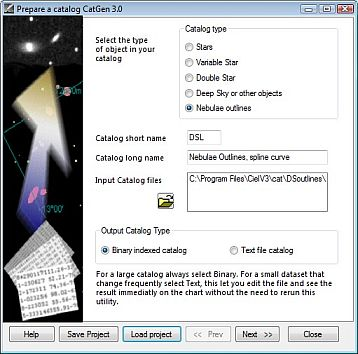
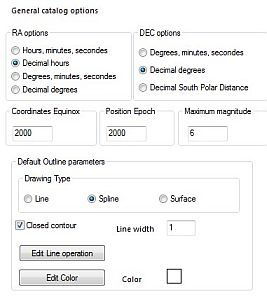
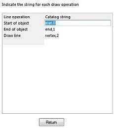
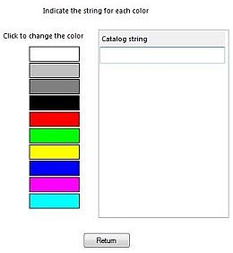
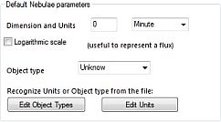
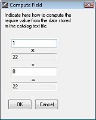
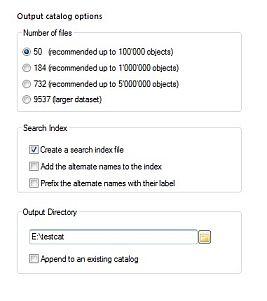
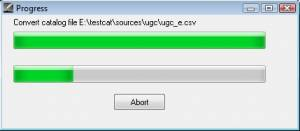

Via het menu: Instellingen → Catalogi, dan in het dialoogvenster, klik de CatGen knop aan de rechterkant.
Je kunt duizenden catalogi gratis downloaden met gegevens van allerlei astronomische objecten. Bekijk hiervoor bijvoorbeeld de websites van CDS of ADC. Er zijn er nog wel meer. Iedere catalogus kan informatie bevatten van enkele tientallen tot vele miljoenen objecten.
Het doel van het programma-tooltje 'CatGen' is om een catalogus in ASCII-tekstformaat om te zetten in een bestandstype waar Cartes du Ciel/Sterrenkaarten snel en efficiënt mee kan werken.
Vanwege de enorme hoeveelheid beschikbare gegevens over allerlei objecten zal het onmogelijk zijn om een keuze te maken die in de behoeften van iedereen voorziet. Maar geen nood: als je ergens specifieke belangstelling voor hebt, dan kun je CatGen gebruiken om je eigen set van gegevens samen te stellen, gebaseerd op de originele professionele catalogus gegevens. Je kunt ook iedere nieuw uitgebrachte catalogus na conversie gebruiken, zodra deze gepubliceerd wordt.
Voor goede prestaties van Cartes du Ciel/Sterrenkaarten kun je ook je zelf samengestelde tekstgebaseerde catalogi met CatGen omzetten naar een georganiseerd binair formaat.
Over het algemeen is een catalogus een eenvoudig tekstbestand. In zo'n catalogus bevat iedere regel (een 'record') alle gegevens van een individueel object. De gegevens van iedere regel zijn weer onderverdeeld in afzonderlijke stukjes met gegevens ('velden'). Deze bevatten een unieke identificatie van het object in de catalogus en de beschrijvende eigenschappen van dit object. De inhoud van de afzonderlijke stukjes gegevens is eenvoudig bepaald door een kolom-positie en een lengte. Bekijk als voorbeeld het volgende:
1 BD+44 4550 3 36042 46 000001.1+444022000509.9+451345114.44 2 BD-01 4525 6128569 235956.2-010330000503.8-003011 98.33 3 33 PscBD-06 6357 281285721002I Var? 000013.0-061601000520.1-054227 93.75 4 86 PegBD+12 5063 87 917012004 000033.8+125023000542.0+132346106.19
Op bepaalde vaste posities zie je vaste soorten van informatie. Normaal gesproken krijg je bij zo'n catalogus ook een 'companion file (readme)', een bestand dat de opmaak beschrijft met alle vereiste details. Gedetailleerde informatie over dit bestand vind je hier.
Byte-by-byte Description of file: catalog.dat -------------------------------------------------------------------------------- Bytes Format Units Label Explanations -------------------------------------------------------------------------------- 1- 4 I4 --- HR [1/9110]+ Harvard Revised Number = Bright Star Number 5- 14 A10 --- Name Name, generally Bayer and/or Flamsteed name 15- 25 A11 --- DM Durchmusterung Identification (zone in bytes 17-19) 26- 31 I6 --- HD [1/225300]? Henry Draper Catalog Number
Het is belangrijk dat je bekend raakt met de opmaak van de tekstgebaseerde catalogus voordat je gaat proberen deze om te zetten met CatGen. Er zijn veel details om rekening mee te houden: eenheden, waardebereiken (tussen blokhaken), getalformaten, identificaties, coördinaatformaten en epoches. Een vraagteken in de uitleg geeft aan dat het betrokken veld niet altijd gegevens bevat, bekijk het bestand om te zien om een idee te krijgen hoe vaak dat is. Lees altijd de opmerkingen als die beschikbaar zijn. Een tekstverwerker die hele grote tekstbestanden kan openen (zoals PFE) is hierbij erg handig.
Als je de gegevens alleen maar beschikbaar hebt in een andere opmaak, dan is het vaak nog mogelijk om een eevoudig programmaatje te schrijven om de gegevens in een buikbare opmaak weg te schrijven. Een script-taal als Perl kan hierbij handig zijn. Voor CSV-bestanden kun je het hele goede CSVed gebruiken, of Calc dat je meegeleverd krijgt met OpenOffice.
Je moet selecteren welke gegevens je wilt overnemen in jouw catalogus-versie. Om het programma tenminste in staat te stellen het object af te beelden heeft het een minimum aan gegevens nodig. Maar je kunt ook kiezen meer velden met gegevens toe te voegen, zodat je meer informatie kunt oproepen wanneer je het object op de kaart aanklikt.
En vergeet niet dat des te meer informatie je toevoegt aan je catalogus, des te meer opslagruimte op je computer nodig zal zijn. Het is niet altijd een goed idee om alle beschikbare informatie over te nemen, neem de tijd om uit te vinden wat je werkelijk nodig hebt. En je zou ook ervoor kunnen kiezen verschillende catalogus-versies te maken, een complete voor je workstation, en een compacte met de minimale informatie voor je laptop met beperkte opslagcapaciteit.
CatGen werkt in vier stappen, ieder op een pagina:
Bij iedere stap kun je je project opslaan als een ”.prj” bestand. Dit bevat de instellingen die je gemaakt hebt met CatGen die bepalen hoe jij je invoerbestand wilt converteren tot jouw catalogus. Dus je kunt het samenstellen van je catalogus onderbreken en later er mee verder gaan door je .prj bestand te laden.
Twee knoppen onderaan iedere pagina bieden die mogelijkheid:
 In deze eerste pagina bepaal je het Catalogus type van je catalogus, dit activeert enkele specifieke mogelijkheden in de volgende pagina's.
De Catalogus korte benaming gebruik je om de catalogus zelf te identificeren. De catalogus korte benaming zul je ook terugzien als voorzetsel van de objectbenaming op de kaarten. De catalogus korte benaming mag een tot vier characters lang zijn.
De Catalogus lange benaming is de volledige catalogus identificatie.
Klik op de Bestand openen knop om je tekscatalogus bestand te laden. De grote catalogi zijn vaak opgesplitst in kleinere bestanden. In zo'n geval selecteer alle bestanden tegelijkertijd, de volgorde maakt niet uit.
Kies Output catalogus type. Met Cartes du Ciel/Sterrenkaarten versie 3 kun je ook 'tekstbestand' kiezen als type voor kleine catalogi.
Klik de Volgende knop om door te gaan naar de tweede pagina.

Pagina 2 is verdeeld in twee delen, het bovenste en onderste gedeelte. Het hangt van je gekozen catalogustype af die je op pagina 1 bepaald hebt of -en wat- je in het onderste deel moet invullen. Voor de sterrencatalogi is het onderste gedeelte leeg, en hoef je dus niets in te vullen.
In de bovenste deel vind je de Algemene Catalogus opties, hier selecteer je het invoerformaat van de coördinaten:
Coordinaten Equinox is de epoche van de coördinaten gerelateerd aan de precessie. Gebruik 2000 voor ICRS.
Positie Epoche is de standaard epoche-positie voor de eigenbeweging, deze datum kun je later in het gegevensbestand voor ieder object veranderen.
Maximum magnitude is de magnitude van het zwakste object in deze catalogus. Dit is speciaal voor sterrencatalogi belangrijk om in te stellen zodat je een goede magnitudeschaal voor de kaart verkrijgt.
Wanneer je op pagina 1 gekozen hebt voor nevelbegrenzingen, dan toont het onderste deel van het venster je de opties voor de standaard omlijningsparameters:
 

Wanneer je op pagina 1 hebt gekozen voor Deep sky of andere objecten, dan toont het onderste deel van het venster je de opties voor de standaard nevel parameters:
Klik op de Volgende knop om door te gaan naar de derde pagina.
Via deze pagina bepaal je welke gegevens je uit het invoerbestand haalt om in jouw catalogus weg te schrijven. Het lijstje toont verschillende velden, die ook afhankelijk zijn van het catalogustype dat je in de eerste pagina hebt bepaald.
Selecteer ieder veld dat je wilt invoegen in je catalogus en definiëer de positie binnen het voorbeeld-record.
De verplichte velden staan tussen blokhaken ”[]”, de verplichte eenheden staan tussen gewone haakjes ”()”.
Geef in Label de benaming van het soort data in het veld. Bijvoorbeeld, voor rechte klimming (Right Ascension) is “RA” een hele goede suggestie. Eerste char en Lengte beschrijven de positie van het veld op iedere regel van het invoerbestand. Je kunt de waardes ovenemen uit de catalogus companion-bestand (readme) of de positie markeren met de muis in het voorbeeld-record. Als je de muis-methode gebruikt, wees er dan wel zeker van dat je de veldlengte lang genoeg instelt, zodat CatGen de langst voorkomende string aan informatie volledig overneemt.
Lijst van velden voor ieder catalogus-type:
Minimaal vereiste velden:
| Sterren | Variabele ster | Dubbelster | Deep sky of andere objecten | Nevelbegrenzingen |
|---|---|---|---|---|
| RA | RA | RA | RA | RA |
| DEC | DEC | DEC | DEC | DEC |
| Magnitude (V) | Magn. comp. 1 | Line operation | ||
| Separation |
Velden van invloed bij het afbeelden van objecten op de kaarten:
| Sterren | Variabele ster | Dubbelster | Deep sky of andere objecten | Nevelbegrenzingen |
|---|---|---|---|---|
| Catalog ID | Catalog ID | Catalog ID | Catalog ID | Catalog ID |
| B-V | Magnitude Max. | Position angle | Nebula type | Line width |
| Proper motion RA | Magnitude Min. | Magnitude | Line color | |
| Proper motion DEC | Magnitude code | Surface brightness | Drawing type | |
| Position Epoch | Largest dimension | |||
| Magnitude B | Smallest dimension | |||
| Dimension unit | ||||
| Position angle |
Informatievelden:
| Sterren | Variabele ster | Dubbelster | Deep sky of andere objecten | Nevelbegrenzingen |
|---|---|---|---|---|
| Magnitude R | Period | Magn. comp. 2 | Radial velocity | Comment |
| Spectral class | Variable type | Epoch | Morphological class | String.. |
| Parallax | Maxima Epoch | Component name | Comment | Numeric.. |
| Comment | Rise Time | Spectral class comp. 1 | String.. | |
| String.. | Spectral class | Spectral class comp. 2 | Numeric.. | |
| Numeric.. | Comment | Comment | ||
| String.. | String.. | |||
| Numeric.. | Numeric.. |
Onderaan de lijst vind je tien strings en tien nummerieke waarden die je vrij kunt gebruiken voor wat voor gegevens dan ook.
Je kunt er voor kiezen om een van die strings te gebruiken als extra naam. Door het vinkje te zetten in de checkbox Gebruik dit veld voor een alternatieve naam zal CatGen deze naam opnemen in het index-bestand van de catalogus. De inhoud van dat veld kun je op deze wijze ook gebruiken in het geval dat de catalogusbenaming ontbreekt.

De Geavanceerd knop maakt je mogelijk om een lineare transformatie uit te voeren van de catalogus gegevens. Deze mogelijkheid is alleen beschikbaar voor de velden met coördinaatgegevens.
Een reden om dit te gebruiken kan zijn dat je coördinaten wilt bepalen wanneer deze niet direct afleesbaar zijn uit je invoergegevens.
Wanneer bijvoorbeeld je invoercatalogus de objectpositie in millimeters op de plaat vanaf een sterrenstelsel centrum (bijvoorbeeld ra: 0h42m42.00s dec:+41°16'00.0”) en je weet dat de bovenkant van de plaat noord is en de schaal van de plaat is 2 boogseconde per millimeter.
Dan zijn de coördinaten (zonder de plaat correctie) in graden ongeveer:
DEC = 41.26667 + Xmm * (2/3600) RA = 10.67500 - Ymm * (2/3600/cos(DEC))
Selecteer “Decimale graden” voor zowel RA en DEC, geef de positie in millimeters en stel de “Geavanceerd” waarde in op:
voor RA: -0.00073837 en 10.67500 voor DEC: 0.00055555 en 41.26667
Als je data met complexere transformaties tot coördinaten moet omzetten, dan kun je dat beter doen voordat je CatGen gebruikt. Een Perl script kan je daarbij in bijna ieder geval helpen.
Klik op de knop Volgende om naar de vierde pagina te gaan.
 In de laatste pagina stel je opties in voor de te genereren catalogus.
Kies het aantal bestanden waarover CatGen de catalogus zal verdelen. Dit is erg belangrijk voor vlotte prestaties bij gebruik van je catalogus.
Zet een vinkje in de checkbox Creëer een zoek-index bestand om het mogelijk te maken de objecten in je catalogus op naam te kunnen zoeken.
Plaats ook een vinkje bij Voeg de altenatieve namen toe aan de index als je wilt dat CatGen deze opneemt in het zoek-index bestand.
Zet een vinkje bij Laat alternatieve namen voorafgaan door hun label wanneer je de alternatieve namen wilt vooraf laten gaan door de labelbenaming die je in pagina 3 hebt ingesteld voor het corresponderende veld. Wanneer een kolom bijvoorbeeld het UGC nummer bevat, dan neem je op deze manier in de zoek-index UGC7442 op in plaats van 7442. Dit kan tot verwarring leiden.
Kies een Output map waar je schrijfrechten hebt om de catalogus-bestanden weg te schrijven. Het is goed gebruik om aparte mappen te maken voor iedere catalogus. Gebruikelijk zul je deze mappen maken als submap van de [Cartes du Ciel /Sterrenkaarten installatie map]/cat/
Als je je catalogus gegevens wilt toevoegen aan een in je gekozen map bestaande catalogus die dezelfde naam heeft als die je in CatGen hebt ingesteld, dan moet je een vinkje plaatsen in de checkbox Voeg toe aan bestaande catalogus.
Dit is handig om een enkele catalogus samen te stellen uit verschillende bronnen. In dit geval moet de structuur van je toe te voegen catalogus gegevens exact overeen komen met de bestaande catalogus, anders zal je data onbruikbaar worden. Maak voorafgaand aan deze bewerking een backup van je bestaande catalogus voor je dit probeert.
Nu je zo ver gekomen bent, sla je je project-definitie op met de Sla project op knop, zodat je later de mogelijkheid hebt van eenvoudige veranderingen. Nu kun je de Creëer catalogus knop klikken!

Een voortgangsvenster toont je hoe de bewerking verloopt. Je kunt het proces voortijdig stoppen door op de afbreken knop te klikken. In zo'n geval krijg je een onbruikbare catalogus.
Nadat CatGen de catalogus heeft samengesteld zal het voortgangsvenster verdwijnen. Door op de Sluiten knop te klikken, stop je CatGen.
Wanneer CatGen binnen een als nummeriek gedefinieerd veld ongeldige inhoud aantreft, zal het de inhoud van het gehele record verwerpen en niet opnemen in de catalogus. Deze records vinden hun weg naar het bestand reject.txt.
Als je een grote catalogus gaat omzetten is het een goed idee om je definities eerst te testen met een wat kleiner aantal records. Zo kun je voorkomen dat je een bestand krijgt dat miljoenen verworpen records bevat! Je kunt een Windows equivalent van de Unix commando's “head”, “tail” en “grep” vinden in dit pakket om je te helpen een bestandje van enkele tientallen regels te knippen uit een groot bestand.
Als alles goed gegaan is, kun je nu verder om je nieuw gemaakt catalogus in te stellen voor gebruik met Cartes du Ciel / Sterrenkaarten. Bekijk hiervoor deze documentatie om je catalogus in te stellen.
{kind=link}
{kind=link}
{kind=link}
{kind=link}
{kind=link}
{kind=link}
{kind=link}
{kind=link}
{kind=link}
{kind=link}
{kind=link}